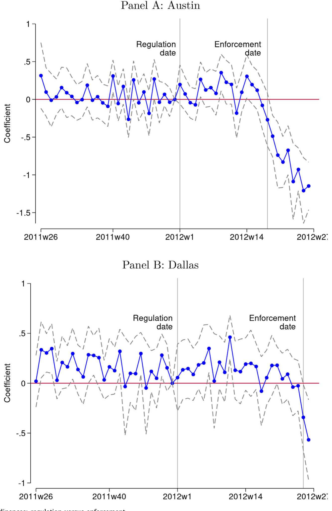
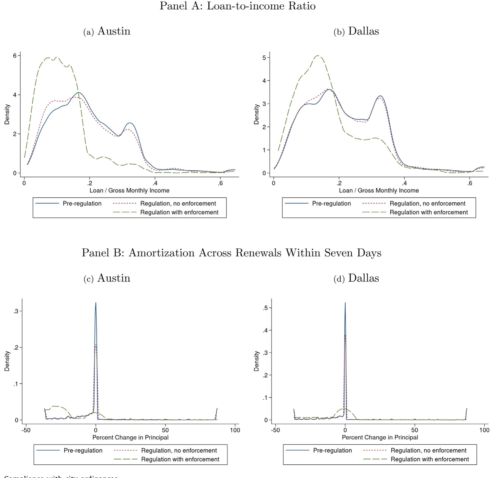
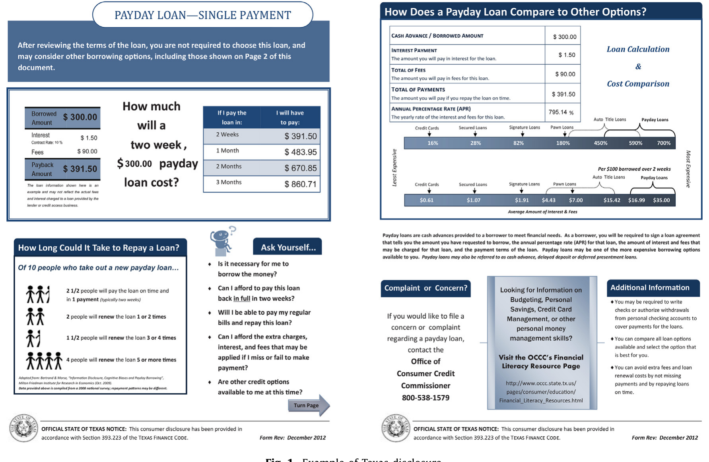
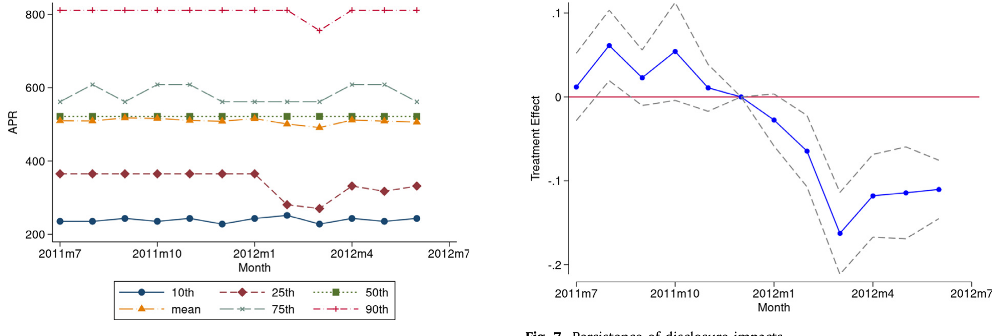
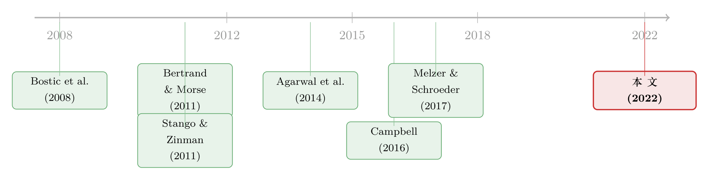
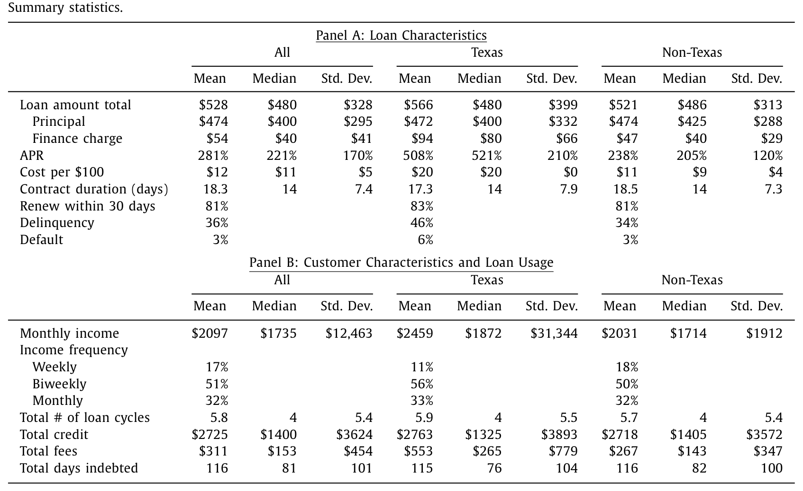

把规则写进法律，不等于写进了现实——得州发薪日贷款里的执法时滞
本文读的是 Wang & Burke (2022, JFE)：2012 年得克萨斯州和州内两座城市同时收紧了发薪日贷款的监管，作者用贷款层面的行政数据发现——城市的供给限制让 Austin 的放贷量下降 61%、Dallas 下降 44%，但这个效果不是从法律生效日开始的，而是从执法真正落地那天开始的；与此同时，全州一纸「行为化」的信息披露，让放贷量持续下降了 12%。
1 一个被忽略的缝隙
我们读过太多「某项监管出台，于是市场发生了某种变化」的论文。它们的叙事几乎都默认了一件事：法律一旦生效，规则就开始起作用。研究者把「生效日」当成处理（treatment）开始的时点，前后一比，算出一个效应，故事就讲完了。
可现实里，监管者和被监管者之间从来不是一纸法令、令行禁止的关系。法律写在纸上是一回事，谁来盯着你执行、什么时候开始罚、罚得疼不疼，是另一回事。尤其在发薪日贷款 (payday loan) 这种从上世纪九十年代起就在「放松管制—再管制」之间反复拉锯、放贷人擅长钻法律空子的行业里——得州把利率上限定在 30% APR，可放贷人干脆换一套「信用修复公司」的规则来放贷，把上限当透明的；很多州明令禁止「展期 (rollover)」，放贷人就重新签一份合同，照样滚下去。
所以本文真正的张力在于：当「规则生效」和「规则被执行」在时间上分开了，我们究竟该把哪一个当成处理的起点？ 选错了，整个效应的量级就全错了。
这正是这篇论文罕见的地方——它能直接在贷款层面观测到合规（compliance）何时开始，从而把「规制 (regulation)」和「执法 (enforcement)」这两件平时被混为一谈的事，干干净净地拆开。
2 三项几乎同时落地的监管
要理解这个识别，先得看清得州 2011–2012 年那场监管究竟动了什么。
2011 年，得州议会修订了发薪日贷款的监管，通过两部法案：一部把放贷人（在得州，它们以「信用准入企业」Credit Access Business, CAB 的身份运营，从借款人角度看与发薪日放贷人无异）纳入州消费信贷专员办公室 (OCCC) 的监管，要求持牌；另一部强制推行新的信息披露 (disclosure)。两部法案都在 2011 年 6 月 17 日签署，统一生效日定在 2012 年 1 月 1 日。
但有人嫌州里的动作太温吞——它没有改变产品本身，也没限制贷款用途。于是 Austin 和 Dallas 两座城市分别在 2011 年 8 月和 6 月通过了更狠的市政条例 (city ordinance)：把单笔贷款限制在借款人月度总收入的 20% 以内，并要求每次展期都要对本金做 25% 的摊销 (amortization)。
这就给了我们三种性质完全不同的处理：
- 两座城市的供给限制（贷款额度上限 + 强制摊销）；
- 全州的信息披露（一张把成本和典型用法讲清楚的纸）。
关键的细节藏在执法时点里。两座城市的条例都和州法一样在 1 月 1 日生效，但因为行政拖延，Austin 直到 5 月 1 日才开始执法，Dallas 直到 6 月 17 日。城市在生效日和执法日之间，被放贷人和行业协会告上了法庭——但没有一桩官司申请了「初步禁令」，所以法律上城市完全可以执法，是它们自己没动手。
接着，一个自然的问题就浮出水面了：在「生效但无人执法」的那几个月里，市场到底变了没有？
3 识别策略：让「执法日」自己说话
作者用的是事件研究 (event study) 配合双重差分 (difference-in-differences, DiD) 的设计，数据是消费者金融保护局 (CFPB) 通过监管程序收集的一份多放贷人、贷款层面的行政数据集——这是这篇论文的底气所在。
识别的逻辑朴素得近乎优雅：如果监管的效果来自「规则本身」，那么市场应该在 1 月 1 日生效日就开始变化；如果效果来自「执法」，那么变化应该等到 5 月（Austin）和 6 月（Dallas）才出现。两个相互竞争的假说，被两个不同的时点干净地区分开。
结果如何？如图 2 所示，生效日什么都没发生，执法日效果立刻出现。这是个相当有力的画面：放贷量在 1 月 1 日纹丝不动，却恰好在各自的执法日急转直下。

Figure 2: Effects of city ordinances: regulation versus enforcement
于是反转出现了——如果一个粗心的研究者用「生效日」当处理起点，他算出来的效应会被严重稀释。当作者把处理起点正确地放在执法日，城市条例带来的放贷量下降是：Austin 61%、Dallas 44%，比用生效日估出来的结果大了好几倍。
这正是本文最尖锐的一击：放贷人并非在生效日「全面合规」，而是策略性地拖延到执法迫在眉睫才合规。作者称之为金融服务企业「策略性不合规 (strategic noncompliance)」的首批直接证据。对照之下，2009 年的 CARD 法案这种联邦大法，逼着大银行在生效日当天就完全合规（Agarwal et al., 2014）——执法强度的差异，直接决定了我们该怎么解读一项监管的「效果」。
而且作者顺手堵住了几条「放贷人可能在偷偷逃避」的暗道：他们没有发现收入造假 (income falsification)，也没有发现贷款溢出到城市边界外的邻近门店。换句话说，放贷量是真的掉了，不是被搬到了别处。

Figure 3: Compliance with city ordinances
4 另一条线：一张纸能劝退多少人？
城市那条线讲的是「执法」，州这条线讲的是「披露」。后者其实更有意思，因为它直接连着行为经济学。
得州的强制披露不是凭空设计的，它脱胎于 Bertrand and Morse (2011) 那个著名的田野实验。那项实验在借款人拿到现金的信封上印三种「行为化」的提示，其中最有效的一种，是把发薪日贷款滚动两周到三个月累积的美元费用，和同样金额用信用卡借款的费用并排列出来。结果是：借款概率下降 5.9 个百分点（相对控制组降了约 11%），借款金额减少 $55。
得州把这套东西法定化了——要求每笔交易前都给消费者看这张披露。图 1 是它的样子：左上角用美元而非 APR 强调长期借款滚雪球般的成本（因为对发薪日借款人来说，美元比 APR 更「扎眼」，也能对冲所谓「花生效应 peanuts effect」——人们对反复出现的小额费用懒得加总）；左下角告诉你「十个典型借款人里有四个会续借五次以上」，对冲过度乐观；右上角把发薪日贷款的 APR 和其他信贷并排，给你一个参照系。

Figure 1: Example of Texas disclosure
但这里有个微妙的难题。把一个临时的、由放贷人配合的田野实验，变成一项全市场的强制令，会发生什么？放贷人现在有了动机去混淆披露、或者抬价来弥补流失的收入。理论和实验文献（Campbell, 2016; Persson, 2014）都担心，放贷人会用「混淆 (obfuscation)」或调价把披露的好处对冲掉。
然后呢？作者用 DiD 发现——披露让放贷量持续下降了 12%，并且至少维持了六个月。这个效果由外延边际 (extensive margin) 驱动：它劝退了一部分本来会借的人，而对平均贷款额度影响很小。更重要的是，价格没有任何反向上涨，续借、拖欠、违约率也没有明显变化。也就是说，放贷人没有偷偷把损失转嫁回去，放贷量的下降被完全传导成了放贷人收入的减少。

Figure 7: Persistence of disclosure impacts
让人有点意外的是，这个 12% 和 Bertrand and Morse (2011) 田野实验的量级惊人地一致——尽管一个是受控实验、一个是全市场强制令，两者本该差很多。而且这个反应在各个人群里都存在：无论收入高低、按周/双周/月发薪，每个群体的借款都显著减少。这就带出一个微妙的政策含义：想靠收入这种简单指标去「精准定位」有偏差的消费者，恐怕没那么容易——因为几乎人人都在响应。
5 文献脉络
这篇论文坐落在几条线的交汇处，理清它们，才能看出它的分量。
最古老的一条线是消费者信息披露。它的核心信念长期是悲观的：披露对均衡价格和数量的影响通常被认为很小，放贷人还能通过混淆把好处抹平。Campbell et al. (2011) 和 Campbell (2016) 把「市场没有给消费者提供做最优选择所需的信息」立为消费者保护监管的根本动机，但同时承认披露效果存疑。
转折点是 Bertrand and Morse (2011)——它用田野实验证明，行为化设计的披露真的能改变发薪日借款行为。本文等于是把这个实验室结论，放到一个全州强制令的真实市场里再检验了一遍，并且活了下来。（关于「披露/默认选项」如何真实地改变消费者，可参见《把「健忘的人」推出门：一场关于默认选项的监管实验》。）
第二条线是执法与合规。这条线在消费金融里出奇地稀薄——大部分关于公共执法的研究都在环境监管、税收遵从、刑法领域。Bostic et al. (2008) 发现州层面反掠夺性贷款法的效果取决于法律执法机制的强弱；Stango and Zinman (2011) 发现 TILA 披露的执法强度至关重要。本文把这条线推到了一个新的精度：直接在贷款层面测量合规何时开始，而不是靠诉讼数量去间接推断。
第三条线是监管向价格的传导。这里的图景一直暧昧不清：Melzer and Schroeder (2017)、Mukharlyamov and Sarin (2019) 发现约束性的价格上限会被其他成本对冲，消费者并没占到便宜；而 Agarwal et al. (2014)、Gross et al. (2021) 发现 CARD 法案和破产改革带来的放贷人收入变化确实变成了消费者的节省。本文站在后一阵营：价格零反应，意味着放贷量的下降被完全传导成了放贷人收入的下降。

把这三条线叠起来看，本文的位置就清楚了：它是少数几篇同时把「执法/合规」「披露效果」「价格传导」串在一个干净自然实验里的论文，而它的独特武器，是那份能看见合规时点的贷款级数据。
6 数据
简单交代一下数据。样本是 CFPB 监管数据集的一个子样本，覆盖 2011 年 7 月到 2012 年 6 月（监管变化前后各六个月）门店发薪日贷款（不含线上），观测单位是单笔贷款。每笔贷款包含本金、总费用、发放日、到期日、实际还款日，以及匿名的客户标识，使得作者能追踪同一放贷人下同一消费者的所有贷款。
如表 1 所示，得州的发薪日贷款几乎比其他州贵一倍：每借 $100 的费用是 $20（州外是 $11），平均 APR 高达 508%（州外 238%）——因为很多州对费用设了上限（通常 $15/$100），得州没有。但有意思的是，借款人的特征和使用模式在得州内外高度相似：本金都在 $472–$474，平均每人每年借约 6 笔。也就是说，得州贵在「价」，不贵在「人」。

Table 1
7 评论与延伸（Q&A + 研究方向）
(a) 几个可能的疑问
Q：放贷量在生效日不动、执法日才掉，会不会只是季节性巧合？
作者的设计恰恰能排除这一点。两座城市生效日相同（1 月 1 日），但执法日不同（Austin 5 月、Dallas 6 月），而放贷量分别在各自的执法日才下跌。一个共同的季节因素无法解释为什么 Austin 比 Dallas 早一个多月开始下降——是执法日、而非日历，决定了拐点。
Q：61% 和 44% 的差距，是不是说明两城条例严厉程度不同？
两城条例几乎一模一样（20% 收入上限 + 25% 摊销）。作者更倾向于把差异归于执法和市场结构的不同，而非规则差异。这也提醒我们：同一条规则，落到不同的执法环境里，效果可以差出近 20 个百分点。
Q：放贷量掉了，会不会只是借款人跑到城外或线上去借了？
作者专门查了这条「打地鼠 (whack-a-mole)」暗道：没有发现向城市边界外门店的溢出，也没有发现收入造假。线上贷款本就不在样本里。所以下降大概率是真实的需求/供给收缩，而非地理转移。（关于消费者在信贷合同里如何造假应对规则，可参见《好心的政策，逼出了说谎的债务人》。）
Q：12% 的披露效应，凭什么说是「需求」下降而不是放贷人收紧了供给？
因为价格没动、续借/拖欠/违约率没动，且效应集中在外延边际（劝退了一批人）而非平均额度。如果是供给收紧，更可能看到价格或额度的调整。证据更像是「一部分消费者看懂了信息，自己决定不借了」。
Q：这能说明发薪日贷款对消费者是「坏」的吗？
不能，作者很克制。响应披露的只是一个「可观但仍属少数」的借款人群体，所以无法据此断定发薪日贷款平均而言对福利是正、是负还是中性。它只说明：至少有一部分人，在拿到易懂的信息后认为少借对自己更好。
Q：和 CARD 法案那种「生效即合规」的世界相比，这篇的核心教训是什么？
执法强度是解读监管效果的「隐藏变量」。大银行面对联邦大法会在生效日就全面合规（Agarwal et al., 2014），而资源有限的市政条例，放贷人会拖到执法临近才动。用错处理起点，估计量会偏小好几倍——这对所有用「法律生效日」做事件研究的实证工作都是警示。
(b) 几个可能的研究问题与提案
1. 把「执法时滞」搬到公司债/信用市场的监管上
【经济故事】本文的核心洞见——「规则生效 ≠ 规则被执行」——绝不限于发薪日贷款。债券市场的诸多规则（如交易报告 TRACE 的合规、做市商资本规则、信用评级监管）同样存在生效与执法落地之间的时滞，机构同样有策略性拖延的动机。 【可行性】中。需要能识别「执法落地」具体时点的事件（监管函、首例处罚、检查启动），并配合 TRACE 或监管检查数据。难点在于精确观测合规时点，而非生效时点——这正是本文的稀缺之处。
2. 外资持有人面对东道国披露/执法的策略性合规
【经济故事】外资机构在不同司法辖区面对的执法强度差异巨大，它们是否像得州放贷人那样「拖到执法临近才合规」？若是，跨境监管的实际效果可能被生效日严重高估。 【可行性】中偏低。需要跨国的持仓与监管执法时点数据，识别「同一规则、不同执法强度」的对照组。doable 与否取决于能否找到执法时点外生变化的自然实验。
3. 披露的「持久性」会不会随时间衰减？
【经济故事】本文只观测到六个月，且效应在六个月内持续。但行为化披露常被怀疑有「适应/麻木」效应——看久了就不看了。一年、两年后这 12% 还在吗？ 【可行性】高，只要能拿到更长窗口的 CFPB 或类似数据。识别上可沿用本文的 DiD，把窗口拉长，观察处理效应的时间路径。
4. 「执法强度」本身能否被量化为一个连续变量？
【经济故事】本文把执法当成二元的「开始/未开始」。但执法有强度——审计频率、专员人数、处罚力度。如果能构造一个连续的执法强度指标，就能直接估计「合规对执法强度的弹性」。 【可行性】中。需要从预算文件、人事、审计记录里抠出执法投入的代理变量（作者在结论里也点了这个方向），数据零散但并非不可得。
8 参考文献与我的判断
这篇论文最大的贡献，是把一个长期被实证研究「默认掉」的假设——法律生效即处理开始——摆到台面上检验，并发现它会让效应低估好几倍。它用一份能看见合规时点的贷款级数据，提供了金融服务企业策略性不合规的首批直接证据；同时，它在一个真实的全市场强制令里，复现了 Bertrand and Morse (2011) 田野实验的披露效应，且没有价格对冲。这两件事单拿出来都够发表，合在一起就相当扎实。
但识别上仍有可担心之处。第一，处理组只有两座城市（Austin、Dallas），DiD 在如此少的处理簇下，标准误的可靠性天然脆弱——作者也确实引用了 Conley and Taber (2011)、Ferman and Pinto (2019)、MacKinnon and Webb (2017) 等小样本推断方法，这点要紧盯。第二，执法日虽然外生于市场，但它源于「行政拖延」，我们无法完全排除拖延本身与某些未观测的地方因素相关。第三，样本窗口只有前后各六个月，「持续至少六个月」是个下界，长期效应仍是未知数。
我最想看到的后续，是把「执法时滞」这把尺子用到信用市场——尤其是外资持有人和债券交易合规上。如果连市政府这种资源有限的小角色都能靠执法实实在在压下放贷量，那么「规则写没写进现实」这个问题，值得每一个研究监管效果的人，先问一遍。
参考文献
- Agarwal, S., Chomsisengphet, S., Mahoney, N., Stroebel, J. (2014). Regulating consumer financial products: evidence from credit cards. Quarterly Journal of Economics 130, 111–164.
- Bertrand, M., Morse, A. (2011). Information disclosure, cognitive biases, and payday borrowing. Journal of Finance 66(6), 1865–1893.
- Bostic, R.W., Engel, K.C., McCoy, P.A., Pennington-Cross, A., Wachter, S.M. (2008). State and local anti-predatory lending laws: the effect of legal enforcement mechanisms. Journal of Economics and Business 60(1), 47–66.
- Burke, K., Lanning, J., Leary, J., Wang, J. (2014). CFPB Data Point: Payday Lending. Technical Report, Consumer Financial Protection Bureau Office of Research.
- Campbell, J.Y. (2016). Restoring rational choice: the challenge of consumer financial regulation. American Economic Review 106, 1–30.
- Campbell, J.Y., Jackson, H., Madrian, B., Tufano, P. (2011). Consumer financial protection. Journal of Economic Perspectives 25, 91–114.
- Conley, T.G., Taber, C.R. (2011). Inference with difference-in-differences with a small number of policy changes. Review of Economics and Statistics 93(1), 113–125.
- Gross, T., Kluender, R., Liu, F., Notowidigdo, M.J., Wang, J. (2021). The economic consequences of bankruptcy reform. American Economic Review 111(2), 2309–2341.
- Melzer, B.T., Schroeder, A. (2017). Loan contracting in the presence of usury limits: evidence from automobile lending. CFPB Office of Research Working Paper.
- Mukharlyamov, V., Sarin, N. (2019). The Impact of the Durbin Amendment on Banks, Merchants, and Consumers. University of Pennsylvania, Institute for Law & Economics Research Paper.
- Persson, P. (2014). Attention manipulation and information overload. Behavioural Public Policy 2, 78–106.
- Stango, V., Zinman, J. (2011). Fuzzy math, disclosure regulation, and market outcomes: evidence from Truth-in-Lending reform. Review of Financial Studies 24, 506–534.
- Wang, J., Burke, K. (2022). The effects of disclosure and enforcement on payday lending in Texas. Journal of Financial Economics 145, 489–507.